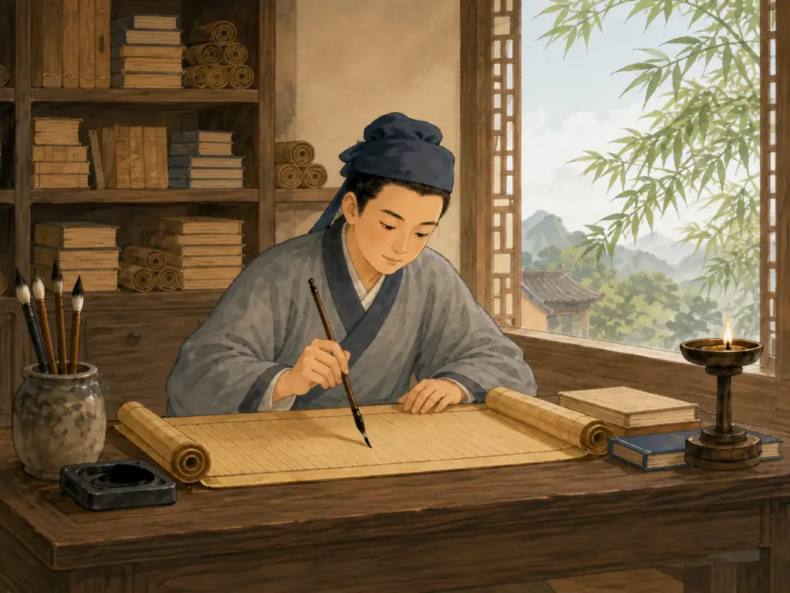

汉字是画出来的吗？
Were Chinese Characters Drawn Like Pictures?
Page 1
书房里的奇怪刻痕
Strange Marks in a Scholar’s Study

A late-Qing scholar examines inscribed “dragon bones” in his study at home.
一百多年前，中国的中药铺里常常卖一种名字很神气的药材——“龙骨”。它当然不是真的龙骨。很多其实是从地下挖出来的古老兽骨，人们把它磨成粉入药。
1899年前后，北京的学者开始注意到一件奇怪的事：有些“龙骨”上，竟然刻着一排排细小的符号。一个流传很广的故事说，研究古文字的王懿荣看到了这些刻痕，觉得它们绝不是普通的划痕。那是字。
后来，学者们找到河南Ānyáng · 河南北部的城市，殷墟和许多甲骨文在这里发现。一带，发现了大量刻着文字的牛肩胛骨和龟甲。这些文字来自三千多年前，我们今天叫它们“jiǎgǔwén · 刻在龟甲和兽骨上的商代文字。”。可是，古人为什么要把字刻在骨头上呢？答案比“古老的文字”有意思得多。
In the late 1800s, Chinese medicine shops sold something with a wonderful name: “dragon bones.” They were not really dragon bones, of course. Many were old animal bones dug out of the ground and ground into powder for medicine.
Then, in 1899, scholars in Beijing began paying attention to something strange about some of these bones: tiny marks had been carefully carved into them. A famous story tells how the scholar Wang Yirong noticed such markings on “dragon bones” from a pharmacy. He studied ancient writing and suspected that these were not scratches at all. They were characters.
Soon scholars traced more of the bones to Ānyáng · 安阳 · A city in northern Henan where the Shang ruins and many oracle bones were found. in northern China. There they found thousands of pieces of ox shoulder blade and turtle shell carrying writing from more than 3,000 years ago. Today, we call this writing jiǎgǔwén · 甲骨文 · Shang-period writing carved on turtle shells and animal bones.—oracle-bone script. But why would anyone write on a bone? That is where the story gets much more interesting.
Page 2
最早的字，真的有点像画
Some of the Characters Really Did Look Like Pictures
仔细看甲骨文，有些字今天的小朋友居然还能猜出来。“日”曾经像一个太阳，“月”像弯弯的月亮，“山”像几个连在一起的山峰。有些最早的汉字，的确是照着东西的样子画出来的。这就是“象形”。
可是，只靠画画是不够的。山可以画，马也可以画。可是下面这个问题怎么画呢？明天会下雨吗？ 偏偏三千多年前的人，真的问过这个问题。
Look closely at oracle-bone writing and you may recognize a few shapes. The character for the sun once looked more like a round sun. The moon curved like a crescent. Mountain rose in pointed peaks. Some early characters began as simple pictures of things people could see.
That is called pictographic writing. But Chinese writing could never survive on pictures alone. After all, you can draw a mountain or a horse—but how do you draw a question like: Will it rain tomorrow? And that is exactly the sort of question people were asking.
Page 3
甲骨上到底写了什么？
What Did People Write on Oracle Bones?
商朝的王会用牛骨和龟甲占卜。人们先在甲骨背面凿出小坑，再用烧热的工具灼烧，让甲骨裂开。商朝人相信，这些裂纹能够带来祖先和神灵的回答。占卜结束后，刻字的人会把问题、判断，有时甚至把后来真正发生的结果一起刻下来。
有些问题很像国王才会操心的事：要不要打仗？出去打猎顺不顺利？可是，还有一些问题听起来一点也不陌生。会下雨吗？
美国史密森尼博物馆收藏的一块龟甲上，就有两组关于雨的卜辞。另一块甲骨问的是：今年会不会有好收成？庄稼当然是大事。可是甲骨上还留下了一些非常私人的烦恼。
商王Wǔ Dīng · 商代国王，安阳甲骨文中保存了许多与他有关的记录。的妻子Fù Hǎo · 商王武丁的妻子，也是一位领兵将领。快要生孩子了。人们为她占卜，想知道生产是否顺利。王看过裂纹以后作出了判断。后来，甲骨上竟然又补刻了真正的结果：三十一天以后，妇好生下了一个女孩。问题留下来了，结局也留下来了。
还有一次，武丁牙疼。那时候没有牙医给他照X光。占卜的人怀疑，会不会是某位去世的祖先让王的牙齿不舒服，于是一个一个地问。是这位祖先吗？不是？那会不会是另一位？
三千多年以后，这些问题居然还刻在骨头上。想一想也挺有意思：一个可以指挥军队的王，最后还是拿自己的一颗牙没办法。古人忽然就没有那么遥远了。
The Shang kings used bones and turtle shells for divination. A diviner made small hollows in the bone or shell and touched them with a heated tool. The heat produced cracks. People believed those cracks could carry answers from powerful spirits and royal ancestors. Then a scribe carved a record beside them.
Some of the questions sound grand and kingly. Should the army go into battle? Would a hunt succeed? Others sound surprisingly ordinary. Will it rain?
A tortoiseshell now in the Smithsonian has inscriptions asking about rain. Another oracle bone asks whether the year will bring a good harvest. Those were serious questions. A bad harvest could mean real trouble for an entire kingdom. But the bones also preserve much more personal worries.
King Wǔ Dīng · 武丁 · A Shang king whose questions and decisions appear in many oracle-bone inscriptions. had a wife named Fù Hǎo · 妇好 · A wife of the Shang king Wu Ding who also led military campaigns.. One surviving inscription asks about her coming childbirth. The king studied the cracks and made a prediction. Later, someone added what actually happened: after thirty-one days, she gave birth to a girl. The bone kept both the question and the ending.
And then there was the king’s tooth. One inscription records that Wu Ding had a sick tooth. The diviners wondered whether one of his dead ancestors was causing the trouble. They asked about one ancestor, then another. Imagine that: more than 3,000 years ago, the ruler of a kingdom was powerful enough to command armies—but still could not make his tooth stop hurting. Suddenly, the people behind the ancient writing do not seem quite so far away.
Page 4
图画只是汉字故事的开始
Pictures Were Only the Beginning

An ancient scholar writes at his desk.
这些甲骨还告诉我们一件重要的事。到了这个时候，汉字早就不只是一堆小图画了。人们已经可以用它写名字、日期、动作、问题和完整的事情。
后来，汉字的样子不断变化。弯曲的图形慢慢变得整齐，造字的方法也越来越丰富。有的部分提醒意思，有的部分帮助人们猜读音。
最初的小图画，慢慢长成了一套真正的文字。所以，今天看到一个汉字时，我们看到的并不是一幅简单的画，而是几千年变化留下来的结果。
The oracle bones show something else important. By the time these words were being carved, Chinese writing was already much more than a collection of little drawings. People could write names, dates, actions, questions, and ideas. Characters could work together to form complete records.
Over many centuries, their shapes changed. Curved pictures became straighter and more regular. New ways of building characters appeared. One part could give a clue to meaning, while another could suggest sound.
The little pictures had grown into a writing system. So when you look at a modern Chinese character, you are not simply looking at a drawing. You are looking at the result of thousands of years of change.
一个比声音走得更远的问题
A Message That Outlived the Person Who Wrote It
后来，汉字不断被整理、统一，字形也继续变化。中国不同地方的人，说话的声音可能很不一样，却常常能够认出同一个写下来的字。声音说完就消失了，文字却可以留下来。
三千多年前，有人拿起工具，在一块骨头上刻下一个问题：会下雨吗？今年会丰收吗？孩子出生会顺利吗？王的牙为什么这么疼？
问这些问题的人早已不在了。我们不知道他们说话是什么声音，也不知道他们平常吃饭时聊些什么。可是他们留下的一些问题，我们今天居然还看得见。汉字的故事也许从图画开始。后来，它学会了一件更了不起的事：把一个人的想法，送到很久很久以后的另一个人面前。
Later rulers standardized Chinese writing further, and the shapes continued to change. People in different parts of China might pronounce the same character differently, yet often recognize the same written form. That helped writing travel farther than any one person’s voice. And somehow, the oldest messages traveled farthest of all.
A Shang scribe carved a question into bone. Will it rain? Will the harvest be good? Will the baby arrive safely? What is making the king’s tooth hurt?
The people who asked those questions have been gone for thousands of years. We do not know what their voices sounded like. We do not know what they talked about over dinner. But we can still read some of the questions they left behind. Chinese characters began partly with pictures. Then they learned how to carry something much bigger: people’s thoughts across time.